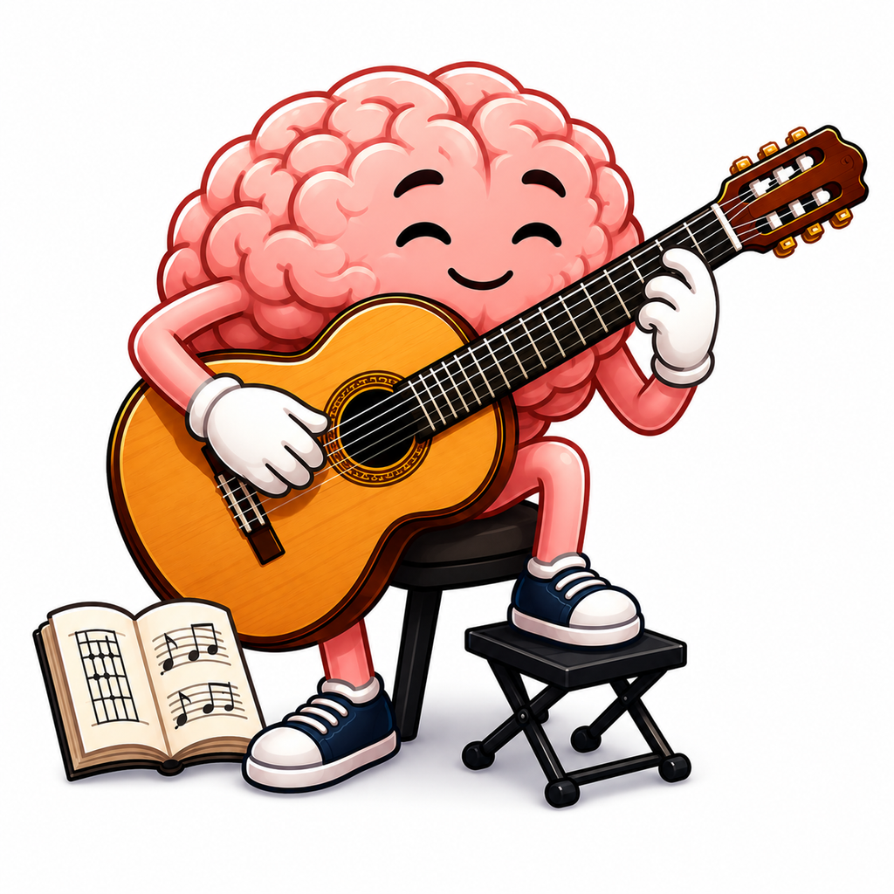
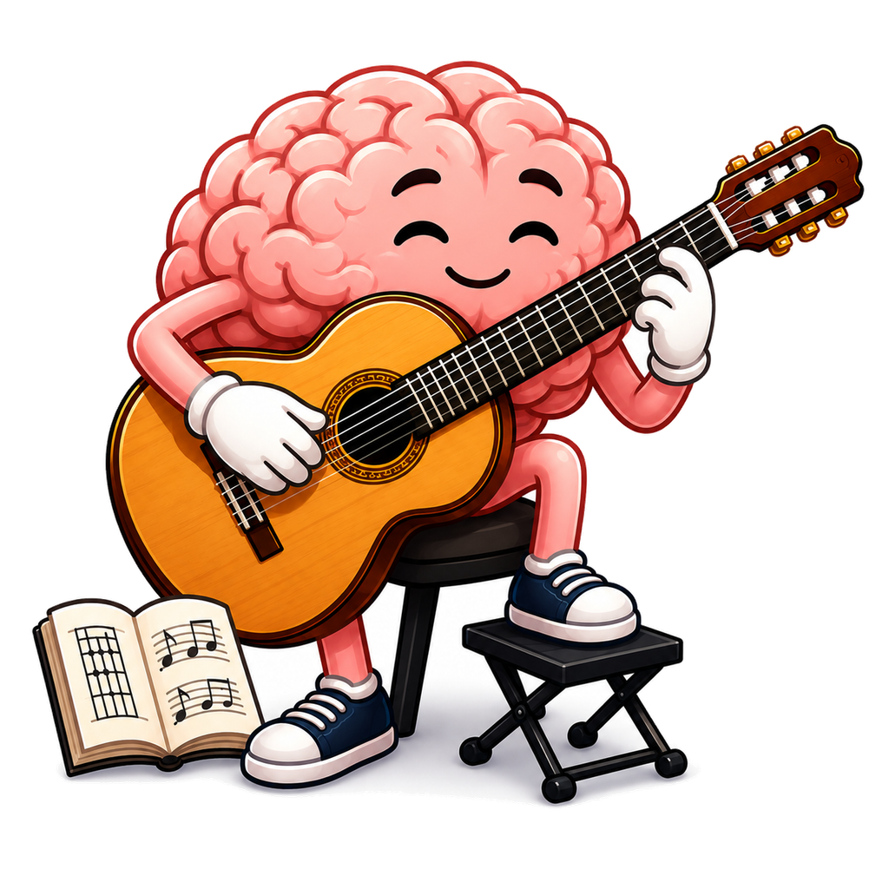

<title>Icon — brain, strumming</title>
<link rel="preconnect" href="https://fonts.googleapis.com">
<link rel="stylesheet" href="https://fonts.googleapis.com/css2?family=Fredoka:wght@500;600;700&family=Nunito+Sans:opsz,wght@6..12,400;6..12,600;6..12,800&display=swap">
<style>
  :root {
    --page-bg: #F5F7F3;
    --page-text: #1E2A22;
    --page-secondary: #66766C;
    --card-bg: #FFFFFF;
    --card-border: #DCE5DE;
    --accent: #3E8F5B;
  }
  @media (prefers-color-scheme: dark) {
    :root:not([data-theme="light"]) {
      --page-bg: #12160F;
      --page-text: #EDF3EA;
      --page-secondary: #9AAB9C;
      --card-bg: #1B2119;
      --card-border: #2B3327;
      --accent: #6FCB90;
    }
  }
  :root[data-theme="dark"] {
    --page-bg: #12160F;
    --page-text: #EDF3EA;
    --page-secondary: #9AAB9C;
    --card-bg: #1B2119;
    --card-border: #2B3327;
    --accent: #6FCB90;
  }

  * { box-sizing: border-box; }
  body {
    background: var(--page-bg);
    color: var(--page-text);
    font-family: "Nunito Sans", -apple-system, system-ui, "Segoe UI", sans-serif;
    margin: 0;
    padding: 48px 24px 96px;
  }
  main { max-width: 760px; margin: 0 auto; }
  h1 {
    font-family: "Fredoka", "Nunito Sans", sans-serif;
    font-weight: 600;
    font-size: 26px;
    margin: 0 0 8px;
    text-wrap: balance;
  }
  .sub { color: var(--page-secondary); font-size: 14px; margin: 0 0 40px; max-width: 62ch; line-height: 1.6; }
  .sub strong { color: var(--page-text); }

  .hero { display: flex; justify-content: center; margin-bottom: 20px; }
  .icon {
    border-radius: 22%;
    overflow: hidden;
    display: flex;
    align-items: center;
    justify-content: center;
    flex-shrink: 0;
    background: #FFFFFF;
    box-shadow: 0 0 0 1px var(--card-border), 0 8px 24px -12px rgba(0,0,0,0.35);
  }
  .icon img { display: block; width: 100%; height: 100%; object-fit: cover; }

  .files {
    display: grid;
    grid-template-columns: repeat(auto-fit, minmax(150px, 1fr));
    gap: 10px;
    margin-bottom: 48px;
  }
  .files div {
    background: var(--card-bg);
    border: 1px solid var(--card-border);
    border-radius: 10px;
    padding: 10px 12px;
    font-size: 12px;
    color: var(--page-secondary);
    line-height: 1.5;
  }
  .files code {
    display: block;
    font-size: 12px;
    color: var(--page-text);
    font-weight: 600;
    margin-bottom: 2px;
  }

  .row-label {
    font-family: "Fredoka", sans-serif;
    font-size: 12px;
    text-transform: uppercase;
    letter-spacing: 0.07em;
    color: var(--page-secondary);
    font-weight: 600;
    margin: 0 0 16px;
  }
  .scales {
    display: flex;
    align-items: flex-end;
    gap: 28px;
    flex-wrap: wrap;
    background: var(--card-bg);
    border: 1px solid var(--card-border);
    border-radius: 16px;
    padding: 28px;
    margin-bottom: 40px;
  }
  .scale-item { text-align: center; }
  .scale-item .icon { margin: 0 auto 8px; }
  .scale-item span { display: block; font-size: 12px; color: var(--page-secondary); font-variant-numeric: tabular-nums; }

  .context {
    display: grid;
    grid-template-columns: repeat(2, 1fr);
    gap: 16px;
    margin-bottom: 40px;
  }
  .context-card {
    border-radius: 16px;
    padding: 28px 24px;
    display: flex;
    gap: 20px;
    align-items: center;
  }
  .context-card.dark { background: #0B0B0C; }
  .context-card.light { background: #FFFFFF; border: 1px solid var(--card-border); }
  .context-card .icon { border-radius: 22%; flex-shrink: 0; background: transparent; box-shadow: none; }
  .context-card p { font-size: 12.5px; margin: 0; line-height: 1.55; }
  .context-card.dark p { color: #B0B4BA; }
  .context-card.light p { color: #52605A; }
  .context-card strong { color: var(--accent); }

  .note {
    font-size: 13px;
    color: var(--page-secondary);
    line-height: 1.65;
    max-width: 64ch;
  }
  .note code {
    background: var(--card-border);
    padding: 1px 5px;
    border-radius: 4px;
    font-size: 12px;
  }
  .note + .note { margin-top: 14px; }
</style>

<main>
  <h1>Icon — brain, strumming</h1>
  <p class="sub">Final artwork, shipped: <strong>a caricatured brain, arms and all, sitting and strumming a classical guitar</strong> — eyes closed, mid-practice, with a footstool, sneakers, and a chord book at its feet. Sourced from <code style="background:var(--card-border);padding:1px 5px;border-radius:4px;">assets/images/playing-brain.png</code> and used exactly as delivered — every icon file below is a resize or a background-removal pass over that same artwork, never a redraw.</p>

  <div class="hero">
    <div class="icon" style="width:280px;height:280px;">
      
    </div>
  </div>

  <div class="files">
    <div><code>icon.png</code>General app icon — 1024×1024, opaque</div>
    <div><code>android-icon-foreground.png</code>Adaptive icon layer — background keyed out to transparent</div>
    <div><code>android-icon-monochrome.png</code>Android 13+ themed-icon silhouette</div>
    <div><code>play-store-icon.png</code>Play Console listing — 512×512, opaque</div>
    <div><code>favicon.png</code>Web tab icon — 48×48</div>
  </div>

  <p class="row-label">At real launcher sizes</p>
  <div class="scales">
    <div class="scale-item">
      <div class="icon" style="width:96px;height:96px;">
        
      </div>
      <span>96px</span>
    </div>
    <div class="scale-item">
      <div class="icon" style="width:60px;height:60px;">
        
      </div>
      <span>60px</span>
    </div>
    <div class="scale-item">
      <div class="icon" style="width:40px;height:40px;">
        
      </div>
      <span>40px</span>
    </div>
    <div class="scale-item">
      <div class="icon" style="width:24px;height:24px;">
        
      </div>
      <span>24px</span>
    </div>
  </div>

  <p class="row-label">Adaptive-icon foreground, on both grounds</p>
  <div class="context">
    <div class="context-card dark">
      <div class="icon" style="width:56px;height:56px;">
        
      </div>
      <p>Over black — confirms the background removal is clean: no white halo around the character on a dark ground.</p>
    </div>
    <div class="context-card light">
      <div class="icon" style="width:56px;height:56px;">
        
      </div>
      <p>Over white — matches what Android actually renders, since <code>app.json</code>'s adaptive-icon and splash-screen background is now <strong>#FFFFFF</strong>, same as this artwork's own canvas.</p>
    </div>
  </div>

  <p class="note">Every surface — <code>icon.png</code>, the Play Store listing, the favicon, and now the Android adaptive icon and splash screen — shares the same white ground, so the mark reads the same wherever it appears. That's a deliberate change from the previous mark, which matched the app's near-black in-app screens instead.</p>
  <p class="note">The monochrome silhouette (Android 13+ themed icons) is derived by flood-filling the background to transparent, then filling the remaining shape with white. The brain, arms, and guitar come through cleanly; the stool's thin wire legs and the second sneaker are mostly outline-on-white in the source art, so they don't fully survive as solid silhouette — a minor loss limited to that one themed-icon mode.</p>
</main>
